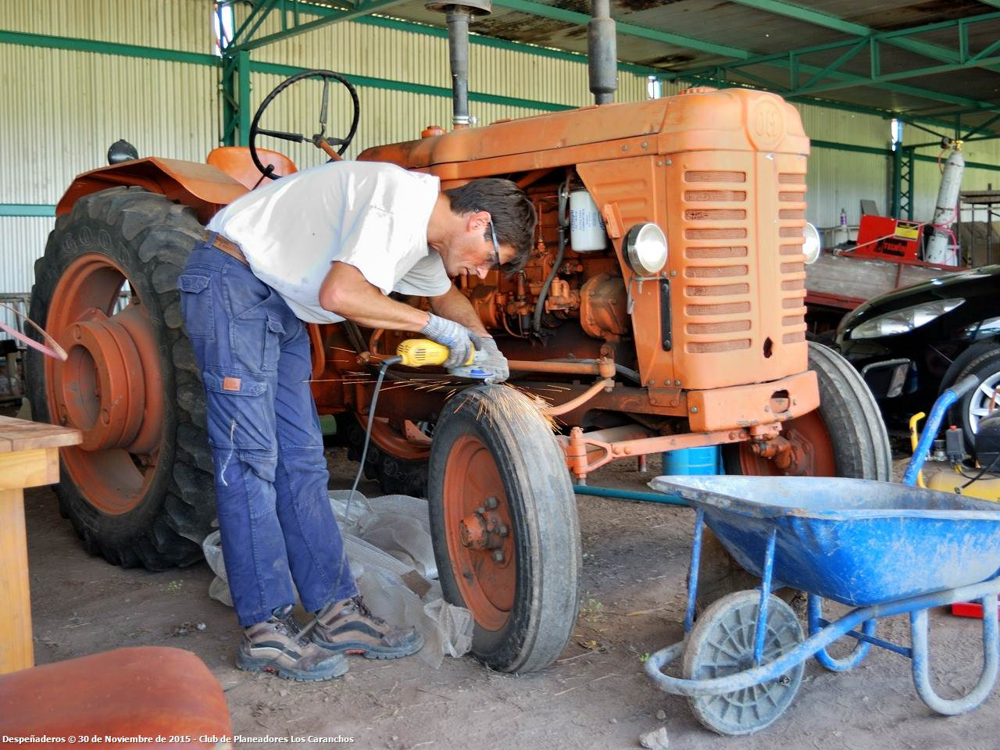
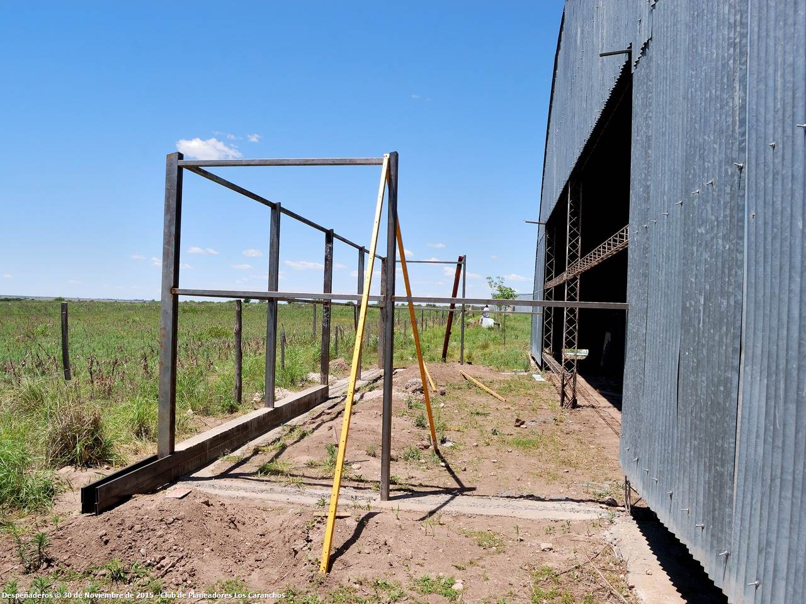
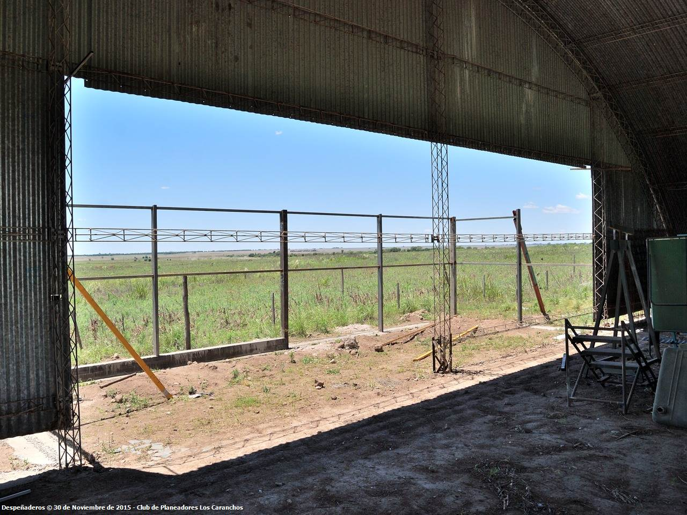
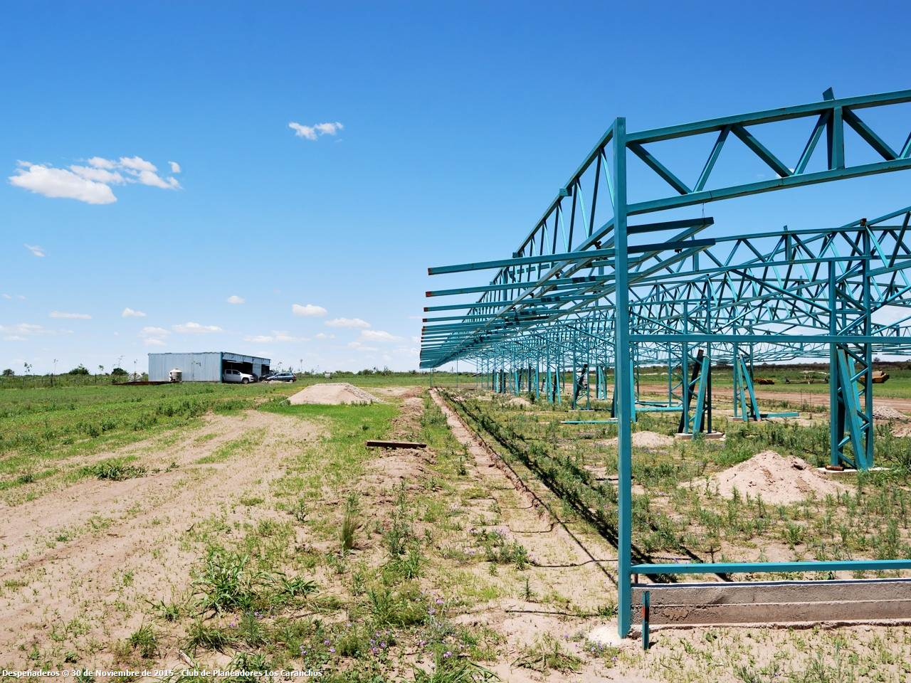
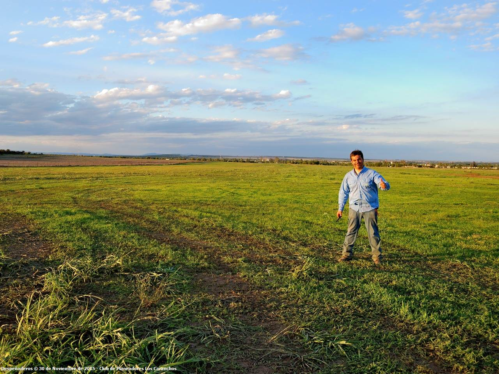
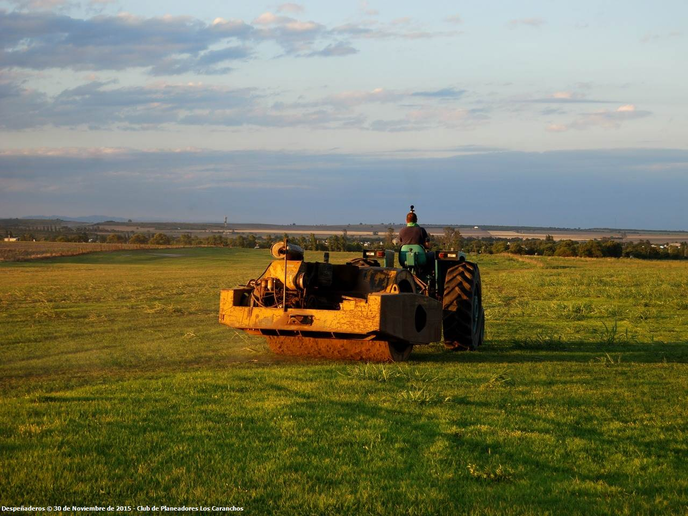

DESPEÑADEROS 28/11/2015
Se realizaron muchas tareas: Mantenimiento del tractor, corte de pasto en la forestación con la "potra", se comenzó con la ampliación del hangar redondo para que pueda albergar los carros de los planeadores "aludos", y se continuó con el rolo para compactar la pista. Tuvimos la alegría que después de las lluvias la pista se tapizó de pasto.





